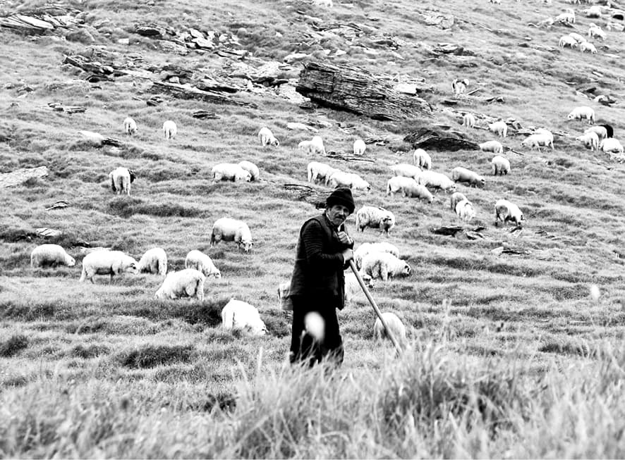

Prostit de televiziune, am căzut pe gânduri, și îmi storceam mințile pentru a-mi imagina economia în recesiune. O văd ca o femeie isterică, pe care nu poți să o liniștești doar cu un simplu: „Nu te mai criza dragă”.
Acum, toată lumea scrie despre criză. Atât de multe s-au spus despre ea, încât este chiar penibil să mai adaugi ceva. Aparent nu ar mai fi nimic de spus despre un subiect în care își dau deopotrivă cu părerea economiști, cântărețe blonde, ba chiar și personaje de desene animate. Totuși, o experiență personală mi-a dezvăluit că toată nebunia asta cu banii care dispar pur și simplu din buzunarele noastre e cam degeaba. O situație încâlcită cu iz de conspirație, care nu poate fi depășită decât cu simplitate.
Soare + Ploaie = Prosperitate
Rătăceam deunăzi prin niște așezări de munte. Mă oprisem pentru o clipă să mă bucur de liniștea zonei. Pe drum, din spatele meu venea un moșneag pe care nu-l observasem până atunci. Mai mult ca sigur, era un om de-al locului, căci reușea să urce poteca fără să ostenească. Părea foarte sprinten. Mă observase și se îndrepta către mine cu aerul unui om cu chef de vorbă. După câteva schimburi de politețuri, mă lovește drept în moalele capului cu o întrebare: „E criză mare la oraș?”.
Chestiunea asta era total nepotrivită pentru un om care mai mult ca sigur nu crescuse cu nasu’n televizor. Părea ciudat ca discuția cu un țăran să alunece către prognoze financiare sau evoluții bursiere. Și pe când îmi scotoceam creierii după un răspuns pe care să-l priceapă omul, acesta mi-o retează scurt. „Nu e nicio criză, vi se pare. Dacă e soare bun și dacă plouă cum trebe’, avem cu toții și ce mânca și ce pune pe noi”. Simplu, prea simplu. Cred că degeaba m-aș fi străduit să-i explic despre nevoile individului urban, despre dezvoltarea socială și alte nimicuri, sistemul prosperității după el era orbitor de simplu, pe axa soare – ploaie și tot ce o mai da Dumnezeu. În sinea mea mi-am spus că omul are dreptate. Chiar avea dreptate.
Întors acasă, m-am pus pe treabă încercând să găsesc rădăcina crizei.
Rădăcina crizei
Reală sau nu, criza este la un pas de a arunca lumea în haos. Recent, Medvedev le arăta pumnul americanilor, pe care îi acuza că sunt la originea crizei. Statele din UE se pregătesc de zor să pompeze bani în bănci, după modelul american. Adică, statul ajută banca, banca papă banul, i se face poftă de mai mult, iar criza își face de cap mai departe. Mai nou, după ultima întâlnire a liderilor G10 s-a decis să se mai trimită vreo 1,1 mii de miliarde de dolari către FMI, pentru ca mai apoi banii să fie aruncați pe soluții anti-criză. Dacă nu vă puteți da seama cât de astronomică este suma, putem face câteva comparații. Cu banii ăștia s-ar putea asfalta cam toată suprafața planetei, s-ar pune capăt sărăciei sau s-ar găsit leac pentru cancer. Credeți că asta ar pune capăt crizei? Nici vorbă. Criza mai cere sacrificii, la fel cum a cerut în 1929 – 1933. Primul sacrificiu este cel al săracilor, apoi al națiunilor, al moralei, al vieții…
Criza interbelică seamănă dureros de izbitor cu cea de acum. Atunci, totul a început cu o umflare a investițiilor la bursă și pe piața imobiliară. Cei care și-au pus banii la bătaie, au riscat pe un fond economic aparent stabil, așteptând un profit rotunjit de imaginația lor pofticioasă. Ați văzut noile cartiere care se construiesc la marginea orașelor? Priviți-le bine și veți vedea că acolo nu mai lucrează nimeni. La fel s-a întâmplat și la finalul lui „Golden age” și începutul Marii crize.
Semnele timpului
Această situație a fost condimentată din belșug cu o explozie a creditelor, speculații bursiere de succes, iar apoi, omenirea s-a trezit cu buzunarele goale în fața unei foamete de bani. Prima bancă care s-a prăbușit răpusă de recesiune a fost KreditAnstalt Austria. Aceasta era principala instituție bancară a imperiului Austro-Ungar, un simbol al vechii ordini. Nimeni nu se temea de recesiune, însă trebuia să cadă un simbol, pentru ca omenirea să priceapă cât de gravă este situația. Cât credeți că va mai dura până la prăbușirea primei bănci simbol din noul val? Puțin, foarte puțin. Ați văzut reclamele cu ofertele speciale pentru depozitele bancare? Sunt însetați de lichidități, pentru a hrăni niște monștri care agonizează.
Acum, la americani, bănci celebre precum Lehman Brothers, New Frontier Bank, City Bank sunt deja istorie, iar prăbușirea lor a însemnat adevăratul debut al crizei. Cine vrea să citească semnele timpului, să aștepte prăbușirea primei bănci de pe la noi și să înțeleagă că abia atunci criza își va arăta colții și îi va hali buzunarele.
Obediență prin sărăcire
Armele războaielor s-au schimbat. Dolarul face mai multe victime decât glonțul, iar câmpul de bătălie modern este bursa. Noile arme ale Noii Ordini Mondiale nu mai sunt tancurile, ci teancurile de bani, și nu vor ezita să le folosească pentru a supune conștiința. Congresmanul republican Ron Paul este cam slobod la gură, a încercat chiar să candideze la președinție, însă s-a trezit tras pe dreapta. Declarațiile sale lucide, arată de ce era nevoie de o criză pentru ca Noua Ordine să-și facă de cap.
„Odată ce și-au dat seama că poporul american a realizat jocul înșelător pe care îl fac, cei care conduc sistemul bancar și monetar nu au cum să fie prea încântați. Dacă vor continua să aplice aceleași politici, dolarul va ajunge la zero, vom avea o creștere accelerată a inflației și toate bancnotele practic se vor autodistruge, valorând exact cât hârtia pe care sunt tipărite. Pasul următor în această criză va fi ca elitele să pozeze în salvatori, oferind populației, chipurile pentru a-i proteja siguranța, soluții care de fapt o vor înrobi și mai tare, adică control strict și forțe de poliție mai numeroase. Același lucru s-a petrecut și la ultima criză economică din anii `20. Populația a intrat în panică, în loc să își dea seama că Federal Reserve este responsabilă de crearea unei himere”, a declarat Ron Paul, înainte de a fi trecut în anonimat în marea politică americană.
Un guvern unic
„Crizele economice au fost și vor fi deseori provocate noi cu scopul de a ne însuși bani din circulație”, spune al XX-lea protocol secret masonic. Vă sună cunoscut? Înalți demnitari din spațiul Uniunii Europene cred că actuala criză economică poate fi depășită prin instaurarea unui sistem financiar autoritar. Recent am auzit această declarație ieșind chiar din gura președintelui francez Nicolas Sarkozy. „Dorim crearea unui guvern economic mondial, care să nu fie redus la G8. Trebuie să refondăm sistemul, iar această refundamentare trebuie să fie globală. Nicio instituție financiară nu trebuie să scape reglementării și supravegherii”.
Ideea de creare a unei autorități financiar-bancare unice s-a lansat la întâlnirea Bilderberg din iunie 2008. Metoda nu este nouă, ea a mai fost folosită cu succes în 1815, 1907, 1929, 1945, 1971. Ce i-a urmat de fiecare dată? O agravare a crizei, tulburări sociale, războaie, domnia răului.
În loc de concluzie
Oare dacă i-aș spune toate lucrurile astea baciului din satul de munte, și-ar schimba opinia despre criză? Sper că nu. Căci oricât de ocultă ar fi conspirația și oricât de crudă ar fi recesiunea, oile și recoltele sale vor fi acolo, neatinse. În satul său de munte, criza nu poate intra, pentru că doar acolo este lumea așa cum ar trebui să fie: simplă și curată.
Criză de suflete – despre lumea făr’ de suflet
Dialogul cu țăranul de pe poteca de munte nu s-a încheiat aici. Omul a încercat să-mi explice simplu viziunea sa despre originea răului. „Știți de ce este criză la voi?”, m-a întrebat el cu un aer savant. Recunosc că mă așteptam să primesc un argument care să mă pună serios pe gânduri. A venit în schimb un răspuns atât de simplu încât m-a dezarmat. „Pentru că lumea nu mai are suflet”. Mai auzisem acest termen, „sufletul lumii”, pe când studiam filosofie. Îl folosea Plotin pentru a contura principiul fundamental al lumii imanente, „mijlocitorul”, între lumea ideală și senzorială, întors spre amândouă, dar rămânând mereu după felul divin, deși mai puțin decât spiritul.
Eram în fața unui țăran filosof? Mai mult ca sigur că interlocutorul meu nu auzise de gânditorii neoplatonici, dar folosea atent aceeași termeni. În simplitatea sa, a reușit să vadă ceea ce pentru ochii mei de orășean era de nepătruns, o criză morală, care otrăvește spiritul lumii.
Turmă fără păstor
Suntem obligați să viețuim într-un mediu poluat informațional. Omul nu mai este spirit viu, ci este înrobit de sistemul mediatic care-l modelează. Cine mai crede că gândurile sale îi aparțin se înșeală amarnic. Maeștrii păpușari din spatele cortinei scenei mondiale și-au dat seama de mult că fără o ordine morală, lumea este o turmă fără păstor. Au cultivat ignoranța pentru că „precum trupul fără suflet este mort, așa și sufletul fără puterea minții este nelucrător și nu poate moșteni pe Dumnezeu”, după cum arată Antonie cel Mare.
Cum poți înrobi un om? Îi golești buzunarele, îi golești sufletul de credință, apoi îi iei identitatea. Generații întregi au stat sub semnul robiei morale. Până și în momentele de apariție a creștinismului, sclavia morală era în floare. Pasiunile brutale, obscene, degradau omul, care fiind înrobit moral nu se ridica peste sclavia socială. Fără Biserica lui Hristos, omul era un sclav orb și mut.
Acum, când UE refuză să recunoască rădăcinile creștine ale Europei, iar BBC-ul ridiculizează deschis Biblia, omul este înrobit, și doar prin creștinism devine liber.

Stăpânul și nerușinarea slugoiului
Creștinismul este atacat chiar la el acasă. Voi da un singur exemplu. Deunăzi, Cristian Pârvulescu suferea de febră intelectuală și a reușit să clocească o „Apocalipsă biometrică” (Cotidianul, 3 Martie 2009). Cu mințile tulburi, Pârvulescu spunea despre creștini și despre părintele Justin Pârvu că sunt: ignoranți, fanatici, iraționali, absurzi, isterici, pentru simplul motiv că se opun pașapoartelor biometrice.
Cine este el? Slugoiul de casă al lui George Soros. Cine este Soros? După cum arată „The Guardian”, unul dintre membrii grupului Bilderberg și unul dintre artizanii crizei financiare. Cu alte cuvinte, stăpânul ne golește buzunarele, iar slugoiul ne sărăcește sufletele.
Știți unde este zăvorul moralei în om? El este în rușine. Aristotel a văzut acest lucru spunând că „a nu fi cuprins de rușine atunci când ai greșit e cea mai mare depravare”. Un cuvânt simplu care definește omul protejat moral, pentru că acela este rușinat în fața răului. „Vinovăția” naște frustrare, „Iertarea” dă un fals sentiment de eliberare, însă „Rușinea” îl ține pe om smerit în fața răului. Și tocmai în rușine lovește sistemul mediatic. Tânărul consumator de televiziune învață că tupeul este rețeta succesului și devine și el purtător de nerușinare.
Dacă Pârvulescu, amintit mai sus, s-ar fi rușinat să-i jignească pe creștini, dacă stăpânul său, Soros, s-ar fi rușinat să regizeze criza economică și dacă toți nerușinații ar fi desprins smerenia rușinii, lumea ar fi fost un loc mai frumos. Totuși, răul își croiește loc prin nerușinare.
Pe unde intră răul
Slăbiciunile omului sunt poarta de intrare a răului. În plină criză morală, cuvintele Sfântului Grigorie Teologul, „cel viclean te iscodește din toate părțile, totdeauna spionează unde să arunce săgețile sale”, ne îndeamnă la vigilență. Așa cum ne îndemna și Sfântul Pavel „Nu dați loc diavolului!” (Efeseni 4, 2). Criza morală nu înseamnă că omul nu mai are valori. Acestea rămân în structura ființei sale, însă sunt mutilate sau înlocuite de valori ale răului. Binele însuși este mutilat și redus la tăcere. Simțurile au aici un rol important. Iar vizualul, căci din el ne luăm cea mai mare parte a informațiilor, ajunge să modeleze conștiințe. Homo Sapiens a devenit de mult un Homo Videns cu nasul lipit de televizor. „Vederea nu înseamnă cunoaștere”, după cum arată Giovanni Sartori (Imbecilizarea prin televiziune și post-gândirea), televiziunea se clădește doar pe audiență și dezinformare. Ajunge astfel să fie avangarda crizei morale și nu scăpăm de ea. Și pentru a afla cine sunt maeștrii păpușari din spatele imoralității este suficient să vedem cine sunt cei care dețin televiziunile. Vom regăsi aceleași chipuri cu cele ale regizorilor din spatele crizei financiare. Un întreg spectacol pe care-l zărim proiectat în casele noastre și pe care îl vom simți tot mai acut în buzunare.
Unealta depravării
Vizualul a devenit un instrument al depravării. Omul devine dependent de imagini, care mai apoi îi copleșesc ființa. Doar un singur exemplu, pornografia, este grăitor pentru aceasta.
În fiecare secundă 3075,65 de dolari sunt cheltuiți pentru pornografie, 28.256 de bărbați privesc un site pornografic în fiecare secundă, 372.000 de indivizi introduc cuvinte legate de pornografie pe un motor de căutare, la fiecare 39 de minute un nou film din această clasă este scos pe piață. Topul țărilor producătoare de pornografie e deținut de SUA cu un procentaj de 85%, Germania, 4%, Anglia, 3% . România este pe locul trei după Bolivia și Chile în ceea ce privește accesarea site-urilor pornografice. Având în vedere caracterul de rețea internațională a internetului, actualmente nu există legi internaționale cu privire la pornografie. În 2006, spațiul virtual pornografic conținea 4,2 milioane de site-uri, adică 12% din totalul site-urilor, cu toate acestea lunar 72 de milioane de vizitatori din toate colțurile lumii, după cum arată Media CBEE.
În loc de concluzie
„Îndrăzniți! Eu am biruit Lumea” le-a spus Hristos pe când El urma să meargă la răstignire. Și a biruit moartea. Cam același ar fi fost și mesajul pe care interlocutorul meu, țăranul din vârful muntelui, a încercat să-l transmită. Fără teamă și cu credința că nu suntem singuri pe lume, orice criză ar cutremura lumea noi vom fi tot aici, ca mărturie a învierii Domnului. Prin tărie simplă și curată nimic nu ne poate atinge, căci soarele și ploaia ne hrănesc, iar Stăpânul Cerului ne veghează.
Comentarii